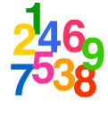

|  |
In July of 2003, WTM had the good fortune to make acquaintance with a very creative mathematician by the name of Jerry Levy. Mr. Levy was attracted by a certain problem based on a popular theme in recreational math, namely pandigitality. Now, pandigitality is a new word not likely to be in the dictionaries yet, as WTM has just invented it here for use in this webpage. At its simplest, it merely means using all the digits 1 to 9 (or in its purest form, 0 to 9) once and only once in some unique manner.[WTM already has presented some material in this regard. See Digital Diversions and Pandigital Diversions.]
Jerry's original interest arose from the following situation:
Given the expression
A/BC + D/EF + G/HI where adjoining letters, such as BC, indicate a 2-place number.
Objective #1: replace the letters with the digits 1 to 9, one digit per letter, in such a way that a integer (i.e. whole number) is the value of the expression.
Objective #2: find the replacements that result in the smallest and largest possible integer values.
[Note: To learn more about this problem and see its solution, click HERE.]
It is here where the creative juices in Jerry's mind began to flow. You see, he then thought to himself, "What if I change the denominator to mean regular algebra notation?" This means that AB now indicates multiplication, as every school algebra student learns. To avoid confusion however, Jerry chose to write the expression this way:
A/(B*C) + D/(E*F) + G/(H*I) Nonetheless, the two objectives remain the same: to obtain integer values and find the extreme solutions.
Not being content with that interesting situation, he pushed on where no man has gone before, namely these expressions:
(A/B)*C + (D/E)*F + (G/H)*I
(A/B)^C + (D/E)^F + (G/H)^I Jerry proceeded to work on these problems by hand, or as he wrote in an email, "intuitive trial and error". Eventually, he made contact with Patrick De Geest, whose website, World!OfNumbers, is a gold mine for number enthusiasts. Soon help was forthcoming from a French school math teacher, Jean-Claude Rosa. Patrick and JC turned their programming skills loose on the problem.
A virtual flood of information soon began to come to light and be offered to WTM. Very interesting it is, too. In fact, so much good data was obtained for the 3rd variant that WTM created a school-level math problem based on it. (See Power-full Fractions.)
No solutions to these problems will be given here in this page. This is a deliberate decision, based on an underlying philosophy of the WTM website, namely to present challenging math materials to the school-aged student, or to the merely curious fan of recreational math, and let them play around with it, making their own discoveries. So dive in and start discovering.
However, what will be given here are some more expression ideas that have been formulated by Jerry, JC, and WTM. (Beware! Some of these cases have not been analyzed by a computer program yet, so proceed at your own risk.)
Variant #4:
A/(B+C) + D/(E+F) + G/(H+I) Variant #5:
(A+B)/C + (D+E)/F + (G+H)/I Variant #6:
A/(B-C) + D/(E-F) + G/(H-I) Variant #7:
(A-B)/C + (D-E)/F + (G-H)/I Variant #8:
(A + B)*C + (D + E)*F + (G + H)*I Variant #9:
(A + B)^C + (D + E)^F + (G + H)^I Variant #10:
(A - B)*C + (D - E)*F + (G - H)*I Variant #11:
(A - B)^C + (D - E)^F + (G - H)^I Variant #12:
A^B/C + D^E/F + G^H/I Variant #13:
A^(B/C) + D^(E/F) + G^(H/I) Variant #14:
(A + B)*C + (D - E)/F + G^H*I Variant #15:
(you try one of your own)
What do you do now, you ask? Well, if you like to tinker around with numbers, why not begin by substituting the numbers from 1 to 9 in these expressions, and see if the results are interesting in some way? Like palindromes, primes, etc. What are the largest values, or smallest values, that you can obtain for a given expressiion? How many different distinct values can be found? Let your creativity flow. Numbers are also meant to be enjoyed, in addition to be admired for their utilitarian mode.
| Comments? Send e-mail. | Back to top | Go back to Home Page | Go back to Contents |